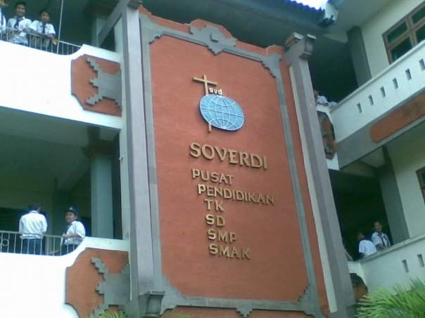
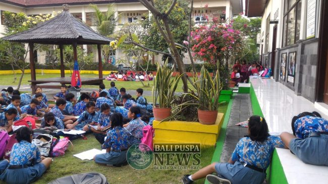
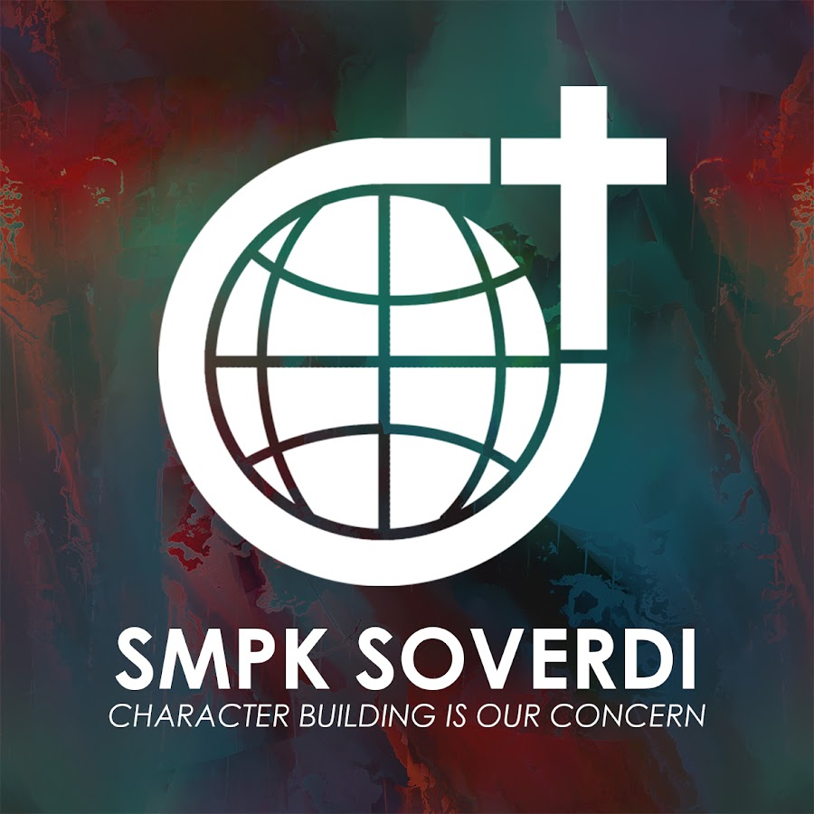
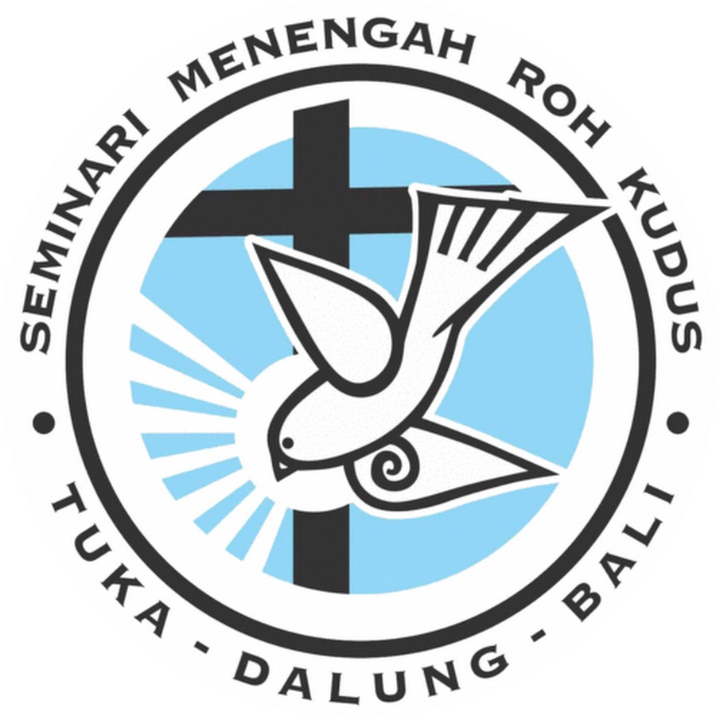

Pendidikan dan Proyek Unggulan
Eksplorasi karya terbaru dalam pengembangan teknologi.
Riwayat Pendidikan
Perjalanan akademik dan pengembangan diri dari waktu ke waktu.
Taman Kanak-Kanak

TKK SOVERDI
Tuban, Kuta - Bali
Sekolah Dasar

SD 4 Tuban
Kuta, Bali
Sekolah Menengah Pertama

SMPK SOVERDI Tuban
Tuban, Kuta - Bali
Sekolah Menengah Atas

Seminari Menengah Roh Kudus
Tuka, Bali

Internet of Things
Smart Agriculture System
Monitoring tanaman berbasis sensor secara real-time.
Selengkapnya →
Web Development
E-Commerce Dashboard
Panel admin intuitif dengan analitik data penjualan.
Selengkapnya →
Artificial Intelligence
Face Recognition AI
Sistem keamanan cerdas menggunakan neural networks.
Selengkapnya →